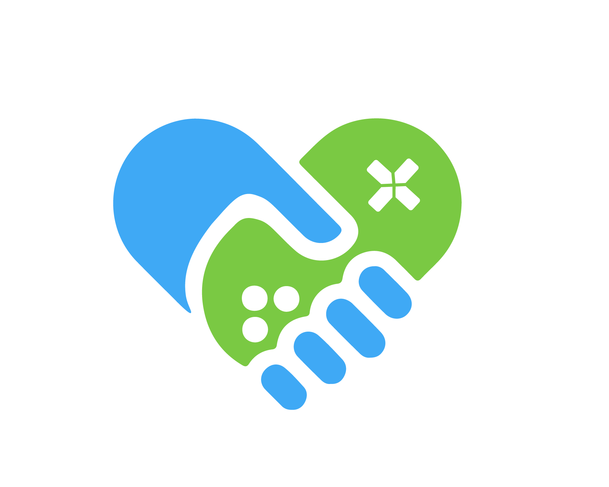
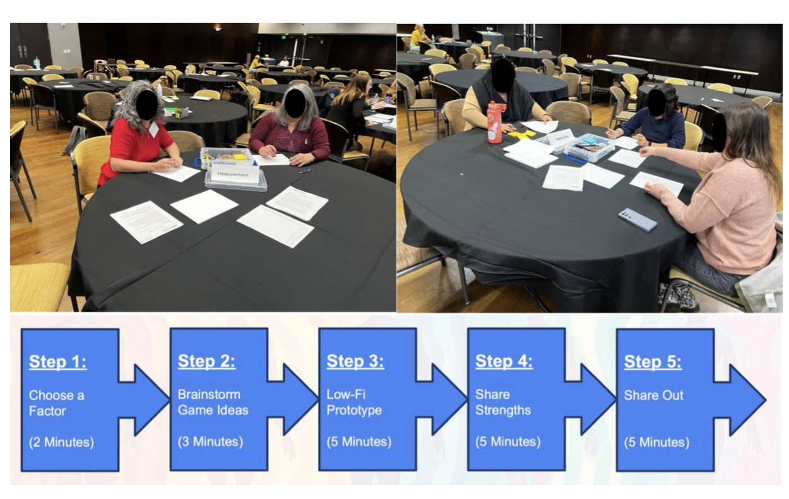
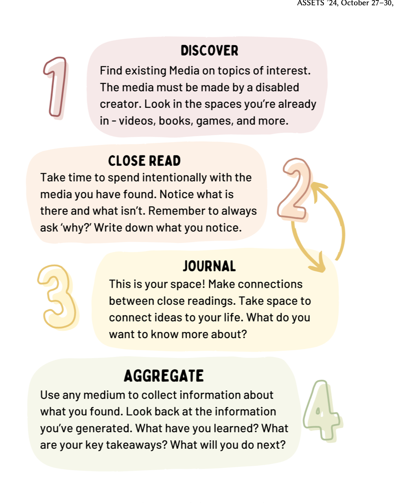
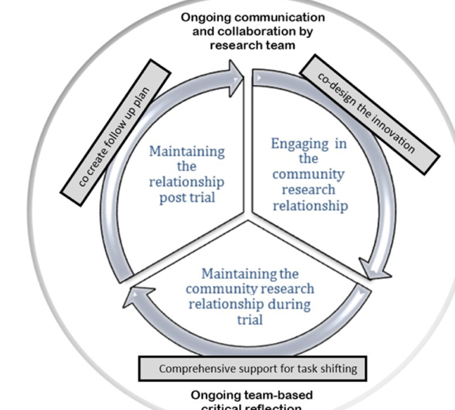
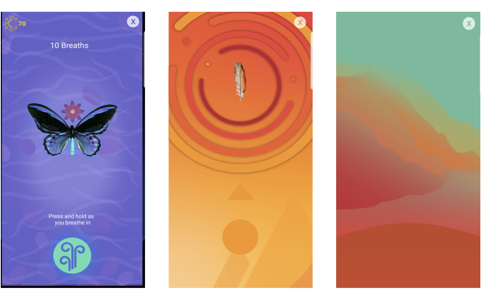
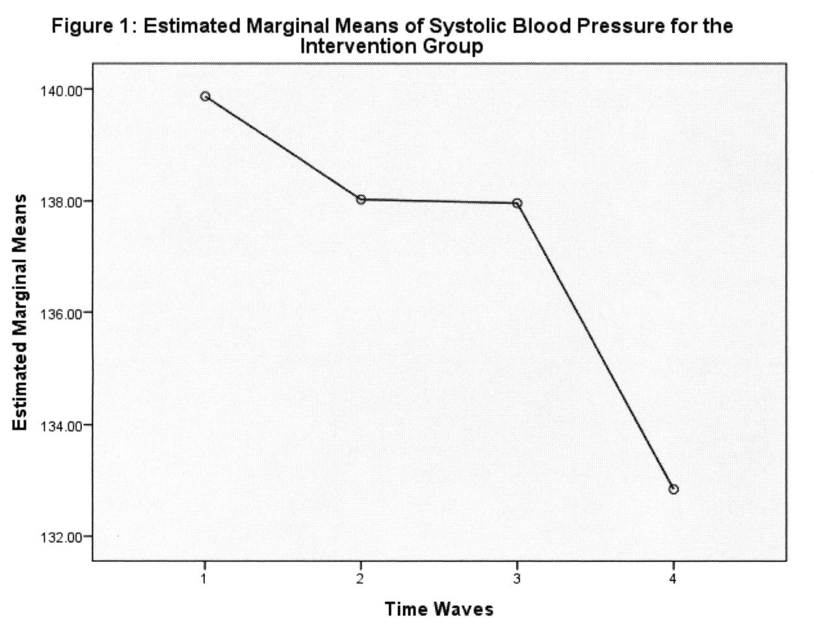
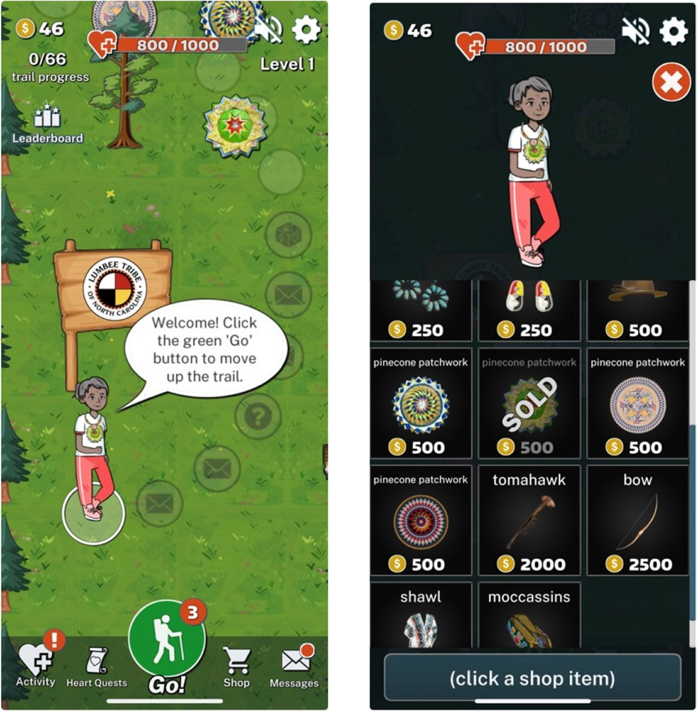
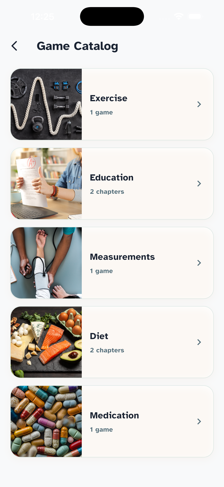
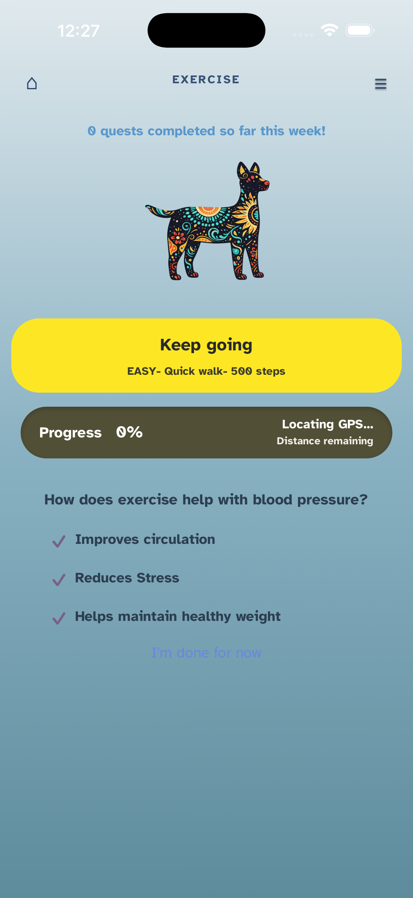
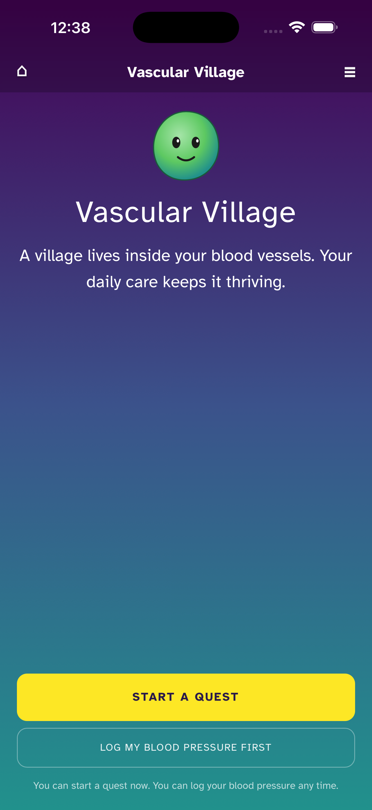

A Scoping Review

We honor their past, present, and future generations, who have lived here for millennia and will forever call this place home.
Where identities meet, the experience is different, not added (Crenshaw). HCI mostly studies one identity at a time.
The overlap is this review: urban Diné adults with disabilities, and their supporters, as one population.
Six concept blocks: games, technology, hypertension, Indigenous, disability, and design
This hierarchy is the structure of the rest of the talk. For each part: what the literature says, the design implications, and a great example of prior work.
Physical activity, blood-pressure monitoring, education, medication, and diet.
Measuring needs a calm, seated body; exercise needs movement.

14 Indigenous participants in N. Arizona; 17 designs → 5 prototypes, one per factor. Did not yet focus on disability.
In 833 adults with disabilities, obesity raised the odds of hypertension almost 7×. In teenagers, seated video gaming was the only sitting habit linked to higher BP.
Encourage movement during play, and help people learn their own blood-pressure numbers.
The Navajo Health & Nutrition Survey measured BP in 780 adults across the Navajo Nation. Only 50 of 97 people with high BP had been told.
No study has combined a game, hypertension, an Indigenous community, and disability.
In an exergame study, the help adults needed dropped from 14.4 to 2.7 events per session. Sum warns of proxies used as substitutes for the person.
Partial participation, like pressing the cuff button, counts as real participation.
Two years co-designing with adults with severe intellectual disabilities, using Active Support: short sessions, only the help needed, choice left with the person.
A 2026 review found only 7 of 25 co-design studies with people with intellectual disability used standards such as Easy Read.
Easy Read materials, short sessions, familiar places, and fair pay for people's time.
Three years with a paid advisory panel of adults with intellectual disability, easy-read text, adult (not childish) pictures, story-based activities, polished prototypes.
The medical model treats disability as a deficit; the social model puts the barrier in the environment and the design. Sum describes tools that solve problems disabled people never had.
Check the problem matters to the community, and respect the choice not to use a tool, opting out has no penalty.
Describes how families resist institutions in small ways, and argues design should make choice easier rather than only push adoption.
DREEM starts from media made by disabled creators, building understanding without spending participants' access labor.
For this work: start with media made by Diné and disabled creators, then bring better questions to the community.

Only 4 of 84 Indigenous health-technology studies engaged with who owns and controls community data. Historical trauma, from colonization and harmful research, shapes trust.
Design implications: community control of data, results shared back, and a community advisory board.

In a trial with Native Hawaiian adults, 42.7% of the hula group reached healthy blood pressure, vs 21.2% of the comparison group.
Design implications: start from what the community values; let the community decide what is shared.

Of 70 game studies, 49 used closed games and only 3 used open-ended play. eSMART-HD lowered systolic pressure about 7 mmHg; MyHeartMate kept only 27% of players after 30 days.
Design implications: room for open, social play in daily life, and engagement that lasts beyond the first weeks.

| Game | Who took part | Design | What they found |
|---|---|---|---|
| eSMART-HD | 116 adults w/ hypertension, Ohio | RCT, 4 sessions | ~7 mmHg drop; not sig. vs control |
| MyHeartMate | 390 heart patients, Sydney | RCT, 6 months | 27% still playing after 30 days |
| BewARe | 11 older adults w/ hypertension | Interviews w/ prototypes | safe, wireless, controller-based |
| Lumbee game | 220 Lumbee adults (planned) | RCT protocol, step tracker | excludes people who use a walker |
| Graham et al. | 14 Indigenous participants, AZ | Participatory workshop | 5 prototypes, one per factor |
| Li et al. 2026 | 14 adults w/ prehypertension, China | Interviews | simple, social play preferred |
Missing across all of them: players with disabilities, and lasting engagement.
Only 15 studies used participatory or community-based design: 11 with Indigenous communities, 3 with people with disabilities. Workshops can also exclude people.
Design implications: fair pay, respect for community assets, community goals, and support that continues after funding.

No single definition; solutions are better or worse, not right or wrong. Research through design learns by making.
Prior work, Situated Play Design (Duval 2022): food traditions from many cultures studied as starting points for playful design.
| Theme | Indigenous | Disability | General |
|---|---|---|---|
| Cultural grounding | 19 | 2 | 1 |
| Sovereignty | 7 | 1 | 0 |
| Proxy care | 0 | 7 | 0 |
| Accessible protocols | 0 | 24 | 1 |
| Technosolutionism | 0 | 2 | 2 |
No study looked at proxy care or accessible protocols with Indigenous people, the gap an intersectional review is meant to show.
Hypertension and play are common; Indigenous studies are built with the community. The three thin columns, disability · data control · open play, are where the literature has least to offer, and where this work must contribute. (click)
| From these parts of the review | comes this requirement |
|---|---|
| Five factors & risk | Movement during play, and calm for measuring |
| Intersectionality, proxy care, protocols, DREEM | Designed with players with disabilities, with support that fades |
| Sovereignty & cultural grounding | Culturally grounded, community-led, with community-owned data |
| Games, community-based research, RtD | Open, situated play, developed with the community |
Design. How do urban Diné adults with disabilities and their supporters co-design playful tools for daily blood-pressure care?
Support. How can caregiver help be designed in, while keeping the player's own voice?
Culture. How can cultural grounding and community data control be built in, and judged by the community?
Play. How do closed games and open, situated play differ in keeping people engaged?



Five games, Dog Walking (exercise), DASH Diet (diet), Heart Smarts (education), Bingo Bash (medication), Vascular Village (measuring). Built in Flutter + Firebase with story games in Twine; works offline. Not yet deployed, next: accessibility work with players with disabilities, and a community data plan.
An intersectional synthesis of 67 studies, a hierarchy of themes with design implications, and requirements traced to the evidence.
Designing with urban Diné adults with disabilities and their supporters, a community advisory board, and a data-sovereignty plan.